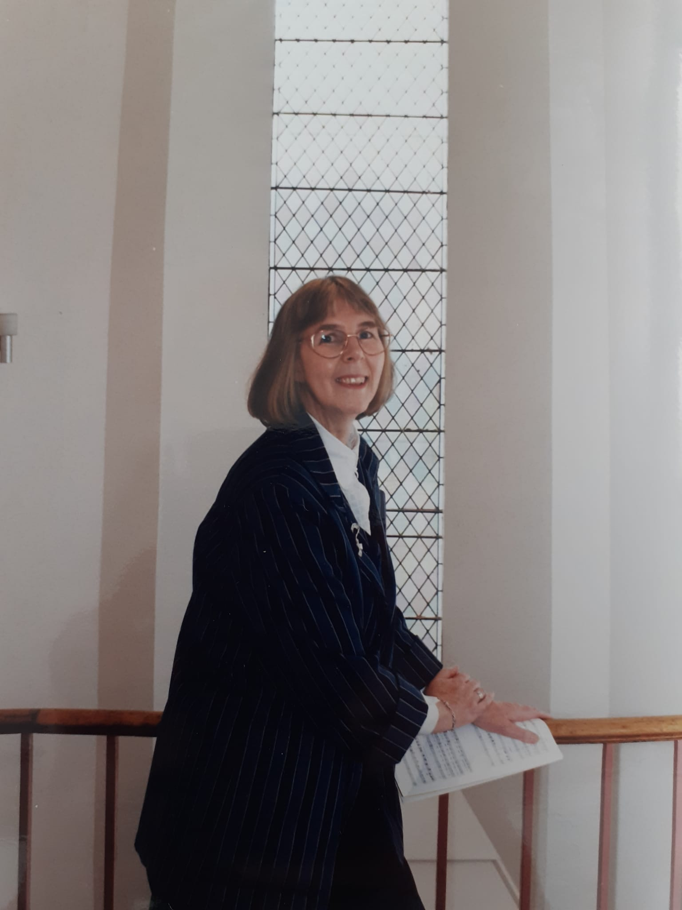
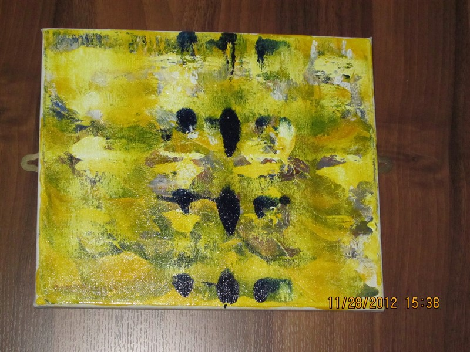
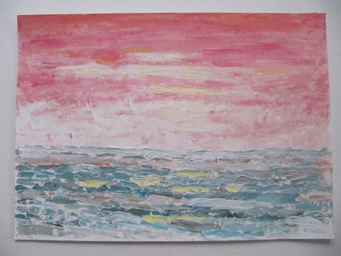
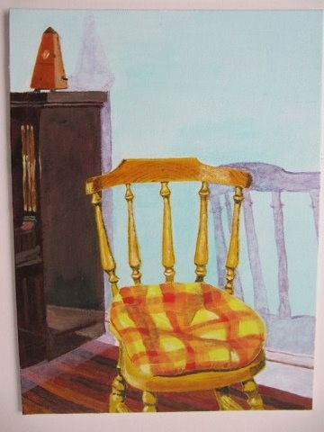
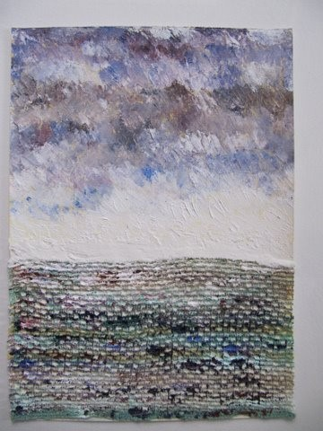

Composer · Performer · Artist
· · · ✦ · · ·
Margaret Lucy Wilkins is a distinguished composer known for her exploration of spatial elements and music theatre, characterised by a strong dramatic, gestural, and visual approach to sound. Born in England in 1939, her illustrious musical career encompasses composing, lecturing, performing, and writing. She has conducted 20th-century music and showcased her talents on medieval instruments with the Scottish Early Music Consort, participating in numerous concerts and broadcasts. From 1976 to 2003, she served as Principal Lecturer in Music at the University of Huddersfield, UK, where she held the position of Head of Composition.
Wilkins' passion for composition began early, winning a Junior Exhibition to study at Trinity College of Music, London, at the age of 12. Subsequently, she pursued Music at Nottingham University, UK, achieving B.Mus. (Hons.) and A.Mus.D. degrees.
Her works have received widespread recognition, featuring many commissions and broadcasts. Notable awards include the Scottish Arts Council Award for Composers, Hinrichsen Foundation Award for Composers, and Arts Council of Great Britain Bursary for Composers. She also received prizes such as The New Cantata Orchestra of London Competition for Young British Composers, the Cappiani Prize for Women Composers, and the Miriam Gideon International Prize.
Wilkins' compositions have been performed across Europe, the Americas, and Asia, captivating audiences at prominent festivals including Edinburgh International, Huddersfield Contemporary Music Festival, and ISCM World Music Days. Her diverse repertoire spans orchestral, chamber, and electroacoustic music. Noteworthy orchestral works include Hymn to Creation, Music of the Spheres, Revelations of the Seven Angels, and Symphony.
Chamber works such as Struwwelpeter, Burnt Sienna: Etude for String Trio, and Ave Maria have also earned wide acclaim. Her electroacoustic works, including Stringsing and L'Attente, have left a significant impact, while Discover Oakwell, a long-running sound installation, received the prestigious Sandford Award for Heritage Education.
As a fervent advocate of new music, Wilkins has directed numerous performances, promoting works by notable composers such as Igor Stravinsky, Anton Webern, Hanna Kulenty, and Olivier Messiaen. She holds esteemed roles in music organisations including the Executive Committee of the Composers' Guild of Great Britain and the Council of the Society for the Promotion of New Music.
Her publications include the album Free Spirit: the Music of Margaret Lucy Wilkins, the DVD Revelations of the Seven Angels, and the book Creative Music Composition: the Young Composer's Voice. She can be contacted at margaretlucywilkins@btinternet.com.


· · · ✦ · · ·


· · · ✦ · · ·
Glasgow Herald: "Textures of extreme clarity and the sense of natural growth the music gives, make this a fascinating and compelling work."
Scotsman: "…a keen feeling for punchy orchestral colours and rhythms with a sometimes Straussian sense of humour."
Malcolm Cruise, Huddersfield Examiner: "Musica Angelorum, inspired by medieval paintings portraying multitudes of angels playing instruments, has a marvellously wrought shape…it displayed, in this splendid performance, a pleasing continuity which generated keen anticipation."
Simon Cargill, Yorkshire Post: "The elevated euphony of Margaret Lucy Wilkins' Musica Angelorum was all the more welcome…this new score…emerged freshly minted in a concert pervaded by the all too familiar gambits of the avant-garde's more recent offerings."
Hubert Culot, BBC Music Magazine: "Musica Angelorum for string orchestra is…as successful and attractive as Burnt Sienna. Many arresting moments in this atmospheric piece that vastly repays repeated hearings. Wilkins has a real feeling for and liking of string textures."
Times Educational Supplement: "Contains many interesting passages where plucked notes inside the piano were made to balance structurally against pizzicato and tremolando effects from the violin."
Scotsman: "A series of studies, cogently and excitingly presented of the different dramatic sonorities obtainable from a string trio."
Michael Ball: "…marvellous humour and variety of gesture…. richly entertaining…the inventiveness and sense of colour in small spaces."
David Briers, Huddersfield Examiner: "A powerful essay for brass band, with trumpets thundering at the back of the hall."
Huddersfield Examiner: "Local children's poems are the inspiration behind the piece and though there is nothing straightforward about the music's tonality or structure, the children took it warmly to their hearts."
Huddersfield Examiner: "…a delicately woven subject, treated in a precise and disciplined manner, though managing without seeming effort, to create endlessness, a feeling of suspension, maintained despite lively rhythmic pulses."
Meirion Bowen, Guardian: "A notable exception extended a Bartokian idiom with power, panache and real ingenuity."
Dmitri van der Werf, De Haagse Courant: "Heel wat verrassender waren Margaret Lucy Wilkins' bijzonder overtuigende Study in Black & White No. 2."
David Hammond, Huddersfield Examiner: "KANAL implies a channel — a way through — as well as a canal. It is an intriguing, metaphoric title for an intriguing work, which makes use of texts from writers as far apart as Blake and Brecht, and mixes words and music, movement and light, in an abstract, and at times quite exciting fashion…. The score provides for a rich texture of resonant sound, rising, falling and echoing in its important contribution to the atmosphere of this unusual, original and engrossing work."
Stephen Barber, Event Magazine: "This was a powerful, engrossing and disturbing piece."
Ramsey Burt, Yorkshire Evening Post: "Julie Wilson's choreographed duets and the Margaret Lucy Wilkins music for Strung Out start at maximum emotional pitch so that one wonders how they can possibly develop — but they do, in a bleak look at a relationship gone sour."
Wakefield Examiner: "Such is their high musical quality there is no doubt that the carols will grace many a Christmas programme for years to come."
A selection of Margaret Lucy Wilkins' paintings
· · · ✦ · · ·



